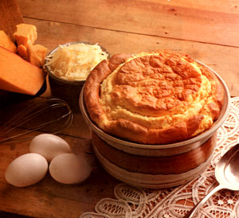
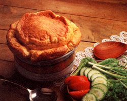

A chicken is just an egg's way of making another egg.
The mountain valley where I live is alive with blue jays, rhododendron and generosity. When the woodworker down the way turned his hand to bird feeders, they suddenly sprouted from trees in front yards up and down the road. With excess boxwood and talent on her hands, the craftswoman across the creek filled all our homes with Christmas wreaths. My nearest neighbor, a spectacularly productive gardener, has been known to send errant telephone linemen home with double armloads of sweet corn. (By longstanding treaty, we all keep our zucchini to ourselves.)
Over the years, I have happily disposed of the gifts that appeared at my door. I've fried the fresh sausage, canned the tomatoes, steamed the kale, frozen the raspberries and marveled at the good fortune that brought me neighbors whose pride in the fruit of their labor was equaled only by their pleasure in giving it away.
But the chickens almost did me in.
Last summer, every layer in the valley went berserk. Giddy with good weather, good breeding and good intentions, hens that normally kept their owners comfortably supplied with eggs began to lay at a manic pace. As the eggs piled up, my inundated neighbors cast about for a solution, and there I was: a renowned consumer of surplus food; the only person around who didn't keep chickens; a sitting duck. Two or three times a week, a brown bag of fresh eggs materialized on my gatepost.
Lord knows I tried. I boiled, scrambled, poached and fried; made omelets, quiches, custards and cakes. For a while it was neck and neck, but gradually the chickens pulled ahead. I needed to use eggs the way the hens seemed to be laying them: half a dozen at a time.
That's when I started making soufflés.
Delicious and dramatic, soufflés deserve a place in the country kitchen. Not only do they take care of any excesses committed in the hen house, but they can be made with just about any fruit or vegetable the gardens (or neighbors) are producing at the moment. Despite their fancy reputation and foreign name (from the French verb souffler, meaning "to breathe" or "to puff"), they can go from cookbook to table in an hour, require only basic cooking skills and, provided a few rules are followed, rarely fail.
A soufflé is simply a sauce lightened by beaten egg whites and baked until high, light and puffy. Whether it's savory (a main course) or sweet (a dessert), getting it ready for the oven involves just four operations: separating the eggs, making the sauce (or base), beating the egg whites, and folding the sauce into the whites. While none of these procedures is complicated, soufflés are not terribly forgiving of small mistakes, so it pays to take care.
Preparing the dish. You'll need a 1 1/2 quart, straight-sided baking dish, either a special souffle dish or an ovenproof casserole of the right size and shape. (Corning makes a round, white baking dish, widely available for under $15, that's excellent for this purpose.)
Using your fingers, thoroughly butter the bottom, sides and rim of the dish. If you skip a spot, especially on the sides or rim, the souffle will stick there on its way up, unable to rise. (The last time I missed a place on the rim, a cheese souffle rose on one side and not the other, resembling a top hat at a rakish angle.) Then sprinkle the buttered dish with an additional lubricant-finely grated cheese, bread crumbs, ground nuts or flour for savory soufflés, granulated sugar for sweet ones-and turn the dish in your hands until all inside surfaces are coated. Dump out the excess coating.
Beating the egg whites.
The character of a souflle-its height, texture and lightness-results from well-beaten egg whites: thousands of minute air bubbles, each surrounded by a thin film of protein. In the heat of the oven, the bubbles expand, making the souffle rise. Thus the more air you can persuade the whites to absorb and retain, the better. A few small adjustments make a very large difference:
1. Cold egg whites are less elastic than room temperature ones. If you remove the eggs from the refrigerator 15 or 20 minutes before beating, you'll get better expansion. (In the absence of forethought, place the eggs in a bowl of warm water for a few minutes.)
2. Since fat inhibits the protein molecules in the white from bonding and forming a network that will support air and sauce, one drop of fatty yolk can reduce the volume of beaten whites by as much as two-thirds. (Which is why all but supremely self-confident cooks separate eggs one at a time, dropping each white into a small bowl before adding it to the others. This way a slip of the hand contaminates one white, not the whole batch.) If you get any yolk in a white, save the egg for tomorrow's breakfast. Also, be sure the beaters and mixing bowls are grease-free. (I seem to get better volume in a deep, stainless-steel bowl than in a china one. While I'm not sufficiently convinced of this to urge a spe cial purchase, you might try a stainless bowl if you have one.)
3. As you beat, try to keep all the whites in motion all the time. If you're using a handheld mixer, circulate the beaters around the bowl, rather than holding them stationary in the center.
Start beating at low speed. When small bubbles permeate the whites (after about a minute, with a hand mixer), increase the speed a notch and beat another minute, or until the whites are foamy. Add 1/4 teaspoon cream of tartar and a pinch of salt (both help stabilize the foam). Then beat at the highest speed until the whites are thick, white, shiny and firm enough to stand in well-defined peaks, with the tips drooping over, when you lift the beaters. You should be able to invert the bowl without losing the whites. Be careful not to overbeat. If the whites are whipped until they form very stiff, pointed peaks or, worse, become grainy and start to separate, they'll lose much of their ability to leaven. Start checking as soon as the beaters begin to leave tracks.
Once you begin beating, don't pause to do other things. Finish the whites and fold in the sauce immediately, because as soon as you stop beating, they start to subside.
Folding. Adding the sauce to the whites without deflating them requires a quick, light hand. First add about a quarter of the whites to the sauce, and whisk thoroughly, to lighten the base. Then tip the lightened sauce down the side of the bowl into the remaining whites. Using a rubber spatula, cut down through the center of the mixture with the edge of the spatula, bring it toward you, then pull it up and over, turning the bowl as you do so. Repeat this motion until the whites are folded into the sauce. Be as gentle as possible, and don't overfold (the whole process should take no more than a minute). Better to leave unincorporated bits of the whites than to deflate them.
Baking. Bake on the middle rack of the oven. Remove the top racks (this thing is going to rise), and make sure the oven is completely preheated (soufflés need quick bottom heat). Don't open the oven door-not even a crack-especially during the first 20 minutes. The resulting drafts and abrupt changes of temperature will drop your souffle in its tracks. In fact, barring emergencies (e.g., the smell of blackened eggs), don't open the door at all before the shortest cooking time specified.
Most recipes suggest minimum and maximum baking times, with a range of about five minutes. The shorter time will produce a creamier, more custardlike consistency, especially in the center; the longer time will result in a drier, firmer texture all the way through.
Serving. If all goes well (and it probably will), your souffle will rise two or three inches above the dish. As soon as it is removed from the oven, however, it will begin to cool, the air trapped inside will begin to contract, and in a few minutes the whole marvelous structure will start to come down. So gather ye dinner guests while ye may; have them seated and waiting when the timer goes off, because the souffle certainly won't wait for them.
Cheese Souffle
This is the classic savory souffle-others just substitute different ingredients for the cheese-and the most common example in how-to-do-it discussions. If you can make this souffle, you can make any other.
1 teaspoon butter
1-2 tablespoons grated Parmesan, fine bread crumbs, flour or finely ground walnuts
4 eggs
2 extra egg whites
3 tablespoons butter
3 tablespoons flour
1 cup hot milk
Freshly ground black pepper
Pinch of nutmeg and cayenne pepper
1 teaspoon Dijon-style mustard
3/4 cup coarsely grated cheese (Swiss, a mixture of Swiss and Parmesan, or sharp Cheddar)
1/4 teaspoon cream of tartar
Pinch of salt
Grease a 1 1/2-quart souffle dish with the I teaspoon butter and coat with Parmesan, bread crumbs, flour or walnuts. Separate the eggs, saving two of the yolks for another use.
For the base, first make a thick white sauce: In a medium saucepan, melt the 3 tablespoons butter. Remove from heat and whisk in the flour. Return to medium heat and whisk for 2 mintues, until mixture is frothy but not browned. Add hot milk all at once, and whisk vigorously until very smooth and thick. Remove from heat, stir in seasonings, egg yolks and cheese. Set aside.
Preheat oven to 400°F. Beat egg whites on low speed until light and foamy, add cream of tartar and salt, and beat to soft peaks, as described earlier. Fold sauce into whites, gently spoon into prepared baking dish, smooth top with wet spatula, and place on middle rack of oven. Immediately reduce heat to 375°F, and bake 30-35 minutes, or until desired consistency is reached. (After 30 minutes, look in the oven; the top should be brown and the souffle should jiggle slightly when you move the dish.) Accompanied by a green salad and a red wine, serves 2 to 3. Variations: Omit cheese and mustard, and add 3/4 cup of any of the following: spinach, kale or collards-cooked, well drained, and pureed or very finely choppedplus 2 tablespoons grated onion; broccoli, cooked and pureed or finely chopped, plus 1/4 cup grated cheese; mushrooms, sautéed, drained and chopped, plus 1/4 cup chopped fresh parsley; finely ground cooked chicken; finely ground cooked ham plus 1 teaspoon dry mustard; kernel corn, cooked and well drained, plus 1 chopped green pepper and 1 chopped pimiento; or any vegetable, meat or fish that sounds promising.
Peach Soufflé
If you're only going to try one, I'd recommend a souffle based on fruit. Superbly light, sweet desserts, fruit soufflés tend to be higher and showier than savory ones, because the base is lighter. Delicious with fresh fruit, they also do a fine job of using up last year's home-frozen fruit before this year's crop comes in.
1 teaspoon butter
1-2 tablespoons sugar
1 pound ripe peaches (or enough to make 1 cup puree)
1/2 cup sugar
2 teaspoons cornstarch
2 teaspoons water, lemon juice or peach brandy
6 egg whites
1/4 teaspoon cream of tartar
Pinch of salt
Grease a 1 1/2-quart souffle dish with 1 teaspoon butter and coat with the 1-2 tablespoons sugar. Peel and pit the peaches, then puree them in a blender or food processor. Place puree and 1/4 cup of the sugar in a saucepan over medium-high heat, and cook until some of the juice has evaporated and you have about 1 cup of thick puree. Dissolve the cornstarch in 2 teaspoons water, lemon juice or peach brandy, and add this mixture to the puree. Boil and stir for 1 minute. Keep warm.
Preheat oven to 400°F. Beat egg whites until foamy, add salt and cream of tartar, and beat until whites form soft peaks. Sprinkle the remaining '/4 cup sugar over the whites and beat it in. Fold sauce into whites (as described earlier), spoon into dish, smooth top with damp spatula, and bake for 15-20 minutes. (Check at 15; this souffle is good at the creamier stage.) Serves 4.
Variations. Instead of peaches, use 1 cup pureed strawberries, raspberries, blueberries, apples, pears, nectarines, apricots, mangos or any other fruit that sounds good. Substitute an appropriately flavored brandy or liqueur.
If the fruit is very sweet or if you prefer a less sweet souffle, reduce the sugar to 1/3 cup.
With the coming of cold weather, the neighborhood hens settled their feathers and once again laid their eggs at a sedate, matronly pace. And though I've had to return to supermarket eggs, I still make soufflés. Versatile, inexpensive and delicious, they dazzle dinner guests who don't know how easy they are to make. Besides, I still have a freezerful of my neighbors' broccoli to work my way through.
|
 Remarkably versatile, souffles can enliven cheese, spinach, broccoli, mushrooms, corn, chicken, ham, strawberries, apples, pears, mangos and more. |
 |
|